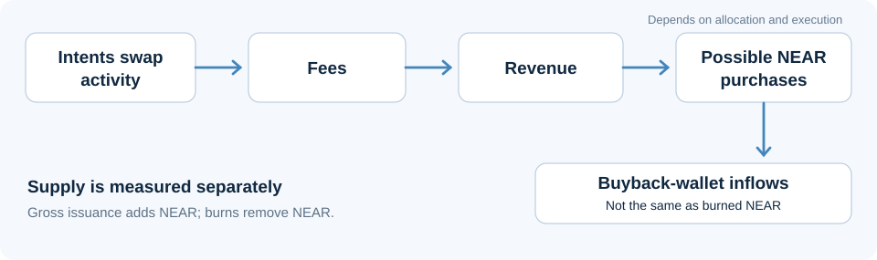

What we measure
Trading activity is only one part of the story. We also track the fees it generates, the revenue recorded by data providers, the NEAR received by the buyback wallet and the supply entering or leaving circulation.
Trading volume
The dollar value of swaps processed through NEAR Intents. High volume means more activity, not necessarily more earnings.
Fees
Charges associated with those swaps.
Revenue
The portion of fees recorded as revenue by the source provider. Revenue is not the same as profit.
Buyback-wallet inflows
Native NEAR received by the designated buyback wallet. The measurement includes qualifying transfers even when a market purchase cannot be independently established.
Issuance and burns
Issuance creates new NEAR; burns permanently remove NEAR from supply. Buyback-wallet inflows do not burn tokens.

See the core calculations
Fee rate = total fees ÷ total volume. Revenue capture = total revenue ÷ total fees.
Net issuance = gross issuance − burns. Issuance offset = (burns + buyback-wallet inflows) ÷ gross issuance. These are two different measurements.
Missing observations are never treated as zero. Full formula definitions are in the technical methodology.
Where the numbers come from
No single provider captures everything. Talvoryn combines DefiLlama’s Intents activity series, NEAR blockchain records, FastNEAR transfers and NearStats integrator data. Official ecosystem sources provide supporting research.
Data freshness
Checking a source and receiving a new observation are two different things. This table reports both dates separately so you can see what is genuinely current.
| Dataset | Checking schedule | Data through (UTC) | Last successful check (UTC) |
|---|
Loading source status…
How data is checked
Before a record is used, Talvoryn checks its date, value and source coverage. Duplicate blockchain transfers are removed; reporting periods are only considered complete when the required observations are present.
When a collection attempt fails, the previously verified record is retained. A successful hourly source check does not make a daily data point an hourly measurement.
What about independent comparisons?
Where comparable evidence exists, datasets can be checked against one another using the same definitions and dates. A broader side-by-side cross-source verification panel is planned; it is not presented as operational today.
How we analyse the data
Different questions call for different rules. We keep each method distinct so that trading, token supply and wallet behaviour are not mixed into a single misleading figure.
Buyback methodology
Every successful positive native NEAR transfer into buybacks.multisignature.near is counted once. Its arrival time determines the reporting date. Under this wallet-inflow definition, treasury transfers and refunds also count.
NEAR in the wallet still exists on-chain. A burn permanently removes tokens. Talvoryn measures them separately.
Transfer verification rules
Only positive native NEAR receipts to the specified account are included. Receipt ID and transfer index prevent duplication. Collection must finish paginating the reporting interval before that interval is marked complete.
Issuance, burns and total supply
Net issuance measures newly created NEAR less permanently burned NEAR. The issuance-offset ratio asks a different question: how much issuance is matched by burns and tokens received in the buyback wallet?
Historical reconstruction relies on verified epoch and UTC-boundary blockchain evidence. The recovered monthly records currently cover October and 1–10 November 2026; earlier workbook history and incomplete daily coverage are documented separately. We leave unsupported dates missing.
Wallet intelligence
Our monitored sample focuses on accounts assessed as holding at least 100,000 NEAR. Identifiable custodians, treasuries, exchanges and contracts are excluded from the individual-wallet group.
Net exchange-related whale flow is qualifying incoming NEAR minus qualifying outgoing NEAR. Known exchange withdrawals and deposits are counted as inflows and outflows; DEX buys and sells require verified swap evidence. Ordinary wallet transfers do not count.
Forecast methodology
Talvoryn provides issuance-offset scenarios, revenue outlooks and NEAR price outlooks. The revenue and offset tools change with your assumptions about activity, fees, allocation, token price and supply.
For the issuance-offset scenario, reaching a target means staying at or above it for three consecutive modelled months.
How the price model is tested
The exploratory price model compares weekly NEAR returns with Bitcoin returns and changes in Intents activity. It uses ridge regression and chronological holdouts. The activity term is retained only if it has a positive coefficient and improves historical error against a market-only model.
Historical variation ranges come from past errors. The Forecast’s Model Checks panel displays the saved model-data cutoff, recorded rebuild time when available, usable observations and error comparisons.
Integrators
NearStats attributes activity to eligible third-party applications using rolling 24-hour, 7-day, 30-day and all-time windows. Named applications are counted once; unidentified, first-party and intermediate routing layers are excluded from third-party rankings.
Why the totals differ: Overview covers broader NEAR Intents activity. Integrators shows only volume attributed to eligible third-party applications. Adding its table may not reproduce Overview’s total, and that alone does not mean either figure is wrong.
Integrator share is its attributed volume divided by the eligible third-party total for the same reporting period. The rolling windows overlap and must not be added together.
Explore integrator activity · NearStats attribution (CC BY 4.0)
Verify our research
A research figure is more useful when you can trace it. The source, observation date and calculation method should be available for independent examination.
- Find the source. Follow the original blockchain or provider record.
- Match the dates. Confirm the reporting period and whether it is complete.
- Check the rules. Review inclusions, exclusions and the formula.
- Reproduce the result. Run the documented scripts or calculate it independently.
Historical source records may be revised. Re-running a calculation using newer data may differ from reproducing the original published snapshot. Public versioned research snapshots are planned to improve exact historical comparisons.
Research sources and references
Activity: DefiLlama. Blockchain supply: NEAR RPC. Transfer evidence: FastNEAR and NearBlocks. Integrators: NearStats. Ecosystem research: NEAR Protocol, NEAR Governance and NEAR Enhancement Proposals.
Talvoryn is an independent research platform. Referencing a provider does not imply that the provider endorses Talvoryn.
See exact queries, checks, formulas, source limitations, flow diagrams and commands to reproduce the research.